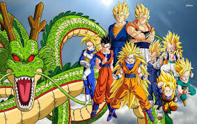

Bienvenidos
En esta pagina se encuentran los 3 juegos de la franquicia que para mi son los interesantes por su jugabilidad, aunque tambien mencionaremos los demas juegos que hay que tambien son divertidos a la hora de jugar.
En esta pagina se encuentran los 3 juegos de la franquicia que para mi son los interesantes por su jugabilidad, aunque tambien mencionaremos los demas juegos que hay que tambien son divertidos a la hora de jugar.
Dragon Ball Legends es un videojuego free to play en línea del género gacha con combates JcJ casuales y competitivos desarrollado por Dimps y distribuido por Bandai Namco para dispositivos móviles, el cual está basado en la franquicia japonesa de anime y manga de Dragon Ball.
Su lanzamiento oficial en Android se produjo el 21 de mayo en España, el 25 de mayo de 2018 en Japón y el 28 de mayo internacionalmente para el mismo sistema operativo, mientras que en iOS se lanzó el día 31 de mayo de 2018.
Dragon Ball Z: Kakarot originalmente anunciado bajo el título en clave de Dragon Ball Game Project Z Action RPG, es un videojuego del género de juego de rol de acción desarrollado por CyberConnect2 y distribuido por Bandai Namco para las plataformas PlayStation 4, Xbox One y PC, cuyo lanzamiento fue el 16 de enero de 2020 en Japón y el 17 de enero de 2020 en América y Europa.
Posteriormente fue lanzado para Nintendo Switch el 24 de septiembre del 2021; y para PlayStation 5 y Xbox Series X/S, como juego estándar y como una actualización gratuita, el próximo 12 de enero del 2023 en Japón y un día después de manera internacional.
Dragon Ball: Sparking!Zero es un videojuego revelado como la próxima entrega a lanzarse de la serie Dragon Ball Z: Budokai Tenkaichi (Dragon Ball Z: Sparking! en Japón).